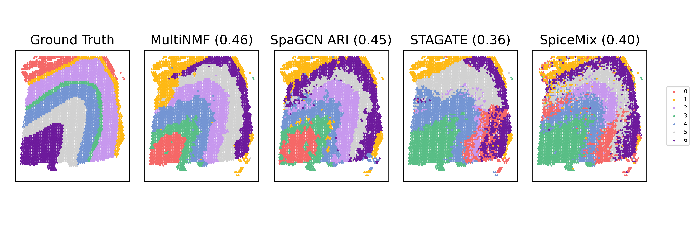
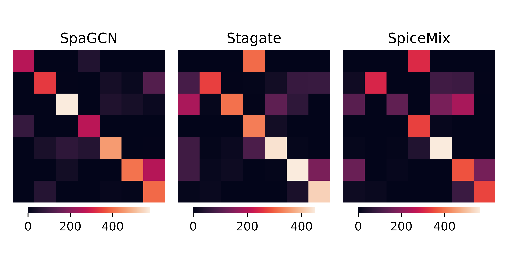

compare_all_DLPFC
#!/usr/bin/env python3
# -*- coding: utf-8 -*-
"""
Created on Tue Mar 28 15:12:56 2023
@author: zach
"""
#!/usr/bin/env python3
# -*- coding: utf-8 -*-
"""
Created on Thu Mar 16 14:38:27 2023
@author: zach
"""
import os
import pandas as pd
import numpy as np
import matplotlib.pyplot as plt
#from pathlib import Path
#from sklearn.preprocessing import StandardScaler
from sklearn.metrics import adjusted_rand_score
from munkres import Munkres
import seaborn as sns
from sklearn.metrics import confusion_matrix
# Code for relabeling Kmeans using Hungarian cost anaylsis
def make_cost_matrix(c1, c2):
uc1 = np.unique(c1)
uc2 = np.unique(c2)
l1 = uc1.size
l2 = uc2.size
print(l1, l2)
print(uc1)
print(uc2)
assert(l1 == l2 and np.all(uc1 == uc2))
m = np.ones([l1, l2])
for i in range(l1):
it_i = np.nonzero(c1 == uc1[i])[0]
for j in range(l2):
it_j = np.nonzero(c2 == uc2[j])[0]
m_ij = np.intersect1d(it_j, it_i)
m[i, j] = -m_ij.size
return m
def translate_clustering(clt, mapper):
return np.array([mapper[i] for i in clt])
def relabel(lab1, lab2):
classes = lab1
labels = lab2
cost_matrix = make_cost_matrix(labels, classes)
m = Munkres()
u = np.unique(classes)
indexes = m.compute(cost_matrix)
for ix in range(len(indexes)):
indexes[ix] = (u[indexes[ix][0]], u[indexes[ix][1]])
mapper = {old: new for (old, new) in indexes}
#new_labels = translate_clustering(labels, mapper)
return mapper
# Functions to read labels and coordinate files
def read_loc(n):
f = open(n)
f.readline()
loc = {}
for l in f:
l = l.rstrip("\n")
ll = l.split("\t")
cell_id = ll[-1]
this_x = float(ll[1])
this_y = float(ll[2])
loc[cell_id] = (this_x, this_y)
f.close()
return loc
def read_labels(n):
f = open(n)
f.readline()
labels = {}
for l in f:
l = l.rstrip("\n")
ll = l.split("\t")
cell_id = ll[0]
pred = (ll[1])
refind_pred = (ll[2])
labels[cell_id] = (pred, refind_pred)
f.close()
return labels
# Samples
samples = ["151507", "151671", "151673"]
# =============================================================================
# user_in = input("Pick Sample")
# sample = samples[int(user_in)-1]
# =============================================================================
sample = samples[0]
# Read in cell names and locations
#loc = read_loc("/home/zach/Documents/NMF/DLPFC-NMF/Spatial/"+"/{}_spatial_locs.txt".format(sample))
loc = read_loc("/mnt/zach/Results_Mat/DLPFC"+"/{}_spatial_locs.txt".format(sample))
# Read in labels
# Read Multi-NMF Labels
#NMF_label = pd.DataFrame(np.load("/home/zach/Documents/NMF/DLPFC-NMF/HMRF_Runs/spatial.jul20.all.comp.{}/Results/spatial.jul20.{}/Labels/{}_beta_.1.5_Cluster.png.npy".format(sample,sample,sample)),index = loc.keys())
NMF_label = pd.DataFrame(np.load("/mnt/project/DLPFC/may10/spatial.jul20.all.comp.{}/Results/spatial.jul20.{}/Labels/{}_beta_.1.5_Cluster.png.npy".format(sample, sample, sample)), index=loc.keys())
NMF_label = NMF_label.squeeze()
# Read in SpaGCN Labels
SpaGCN_label = pd.read_table("/home/zach/Documents/NMF/Test_SpaGCN_Results/SpaCGN_OriginalRes_Result_LIBD/{}/labels.txt".format(sample), header=None, na_filter=False, index_col=0)
SpaGCN_label.reindex(loc.keys())
SpaGCN_label = SpaGCN_label[2].iloc[1:].astype("int") # Grab refined prediction
# Read in SpiceMix Labels
SpiceMix_label = pd.read_table("/home/zach/Documents/NMF/SpiceMix_vs_MultiNMF/Dataset_Files_LIBD/{}/results/Spicemix_pred_{}.txt".format(sample, sample), header=None, na_filter=False, index_col=0)
SpiceMix_label.reindex(loc.keys())
SpiceMix_label = SpiceMix_label[1]
# Read in Stagate Labels
Stagate_label = pd.read_csv("/home/zach/Documents/NMF/STAGATE_vs_MultiNMF/Codes/{}_results.csv".format(sample), na_filter=False, index_col=0)
Stagate_label.reindex(loc.keys())
Stagate_label = Stagate_label["louvain"]
# Select only cells which are all common to all methods
remove = list(set(SpaGCN_label.index).difference(NMF_label.index))
for r in remove:
SpaGCN_label = SpaGCN_label.drop([r])
remove = list(set(SpiceMix_label.index).difference(NMF_label.index))
for r in remove:
SpiceMix_label = SpiceMix_label.drop([r])
remove = list(set(Stagate_label.index).difference(NMF_label.index))
for r in remove:
Stagate_label = Stagate_label.drop([r])
remove = list(set(NMF_label.index).difference(SpaGCN_label.index))
for r in remove:
NMF_label = NMF_label.drop([r])
remove = list(set(SpiceMix_label.index).difference(SpaGCN_label.index))
for r in remove:
SpiceMix_label = SpiceMix_label.drop([r])
remove = list(set(Stagate_label.index).difference(SpaGCN_label.index))
for r in remove:
Stagate_label = Stagate_label.drop([r])
remove = list(set(SpaGCN_label.index).difference(SpiceMix_label.index))
for r in remove:
SpaGCN_label = SpaGCN_label.drop([r])
remove = list(set(NMF_label.index).difference(SpiceMix_label.index))
for r in remove:
NMF_label = NMF_label.drop([r])
remove = list(set(Stagate_label.index).difference(SpiceMix_label.index))
for r in remove:
Stagate_label = Stagate_label.drop([r])
remove = list(set(SpaGCN_label.index).difference(Stagate_label.index))
for r in remove:
SpaGCN_label = SpaGCN_label.drop([r])
remove = list(set(SpiceMix_label.index).difference(Stagate_label.index))
for r in remove:
SpiceMix_label = SpiceMix_label.drop([r])
remove = list(set(NMF_label.index).difference(Stagate_label.index))
for r in remove:
NMF_label = NMF_label.drop([r])
# Reassign Cluster Labels with NMF as reference
# SpaGCN
remove = list(set(NMF_label).difference(SpaGCN_label))
NMF_copy = NMF_label
SpaGCN_copy = SpaGCN_label
for r in remove:
indexes = np.where(NMF_copy == r)[0]
names_nmf = NMF_copy.iloc[indexes].index
names_Spa = SpaGCN_copy.iloc[indexes].index
NMF_copy = NMF_copy.drop(names_nmf)
SpaGCN_copy = SpaGCN_copy.drop(names_Spa)
NMF_copy = NMF_copy.to_numpy().flatten()
SpaGCN_copy = SpaGCN_copy.to_numpy()
key = relabel(NMF_copy, SpaGCN_copy)
SpaGCN_label = pd.DataFrame(translate_clustering(SpaGCN_label, key), index=SpaGCN_label.index)
SpaGCN_label = SpaGCN_label[0]
# SpiceMix
NMF_copy = np.array(NMF_label)
Spicemix_copy = np.array(SpiceMix_label)
key = relabel(NMF_copy, Spicemix_copy)
SpiceMix_label = pd.DataFrame(translate_clustering(SpiceMix_label, key), index=SpiceMix_label.index)
SpiceMix_label = SpiceMix_label[0]
# Stagate
NMF_copy = np.array(NMF_label)
Stagate_copy = np.array(Stagate_label)
key = relabel(NMF_copy, Stagate_copy)
Stagate_label = pd.DataFrame(translate_clustering(Stagate_label, key), index=Stagate_label.index)
Stagate_label = Stagate_label[0]
#Calculate ARI Scores For Plot
#Grab truth text
#Grab Ground Truth
tlabel = pd.read_table(os.path.join("/home/zach/Documents/NMF/spatialLIBD",sample,"{}_truth.txt".format(sample)),header=None,na_filter=False,index_col=0).squeeze()
remove = list(set(tlabel.index).difference(NMF_label.index))
for r in remove:
tlabel = tlabel.drop([r])
NMF_copy = NMF_label
tlabel_copy = tlabel
NMF_copy = np.array(NMF_copy)
tlabel_copy = np.array(tlabel_copy)
key = relabel(NMF_copy,tlabel_copy)
tlabel = pd.DataFrame(translate_clustering(tlabel, key),index = tlabel.index)
tlabel = tlabel[0]
#remove = list(set(tlabel.index).difference(adata.obs.index))
#nans = tlabel[tlabel[1] == ''].index
#tlabel = tlabel.to_numpy().flatten()
NMF_copy = NMF_label
NMF_copy = NMF_copy.reindex(tlabel.index).fillna('').astype("string")
ARI_NMF = adjusted_rand_score(tlabel, NMF_copy)
SpaGCN_copy = SpaGCN_label
SpaGCN_copy = SpaGCN_copy.reindex(tlabel.index).fillna('').astype("string")
ARI_SpaGCN = adjusted_rand_score(tlabel, SpaGCN_copy)
SpiceMix_copy = SpiceMix_label
SpiceMix_copy = SpiceMix_copy.reindex(tlabel.index).fillna('').astype("string")
ARI_SpiceMix = adjusted_rand_score(tlabel, SpiceMix_copy)
Stagate_copy = Stagate_label
Stagate_copy = Stagate_copy.reindex(tlabel.index).fillna('').astype("string")
ARI_Stagate = adjusted_rand_score(tlabel, Stagate_copy)
#Save Labels
NMF_label.to_csv("./DLPFC_Dataset/{}/NMF_labels_{}".format(sample,sample),sep="\t",index_label=False,header=False)
SpaGCN_label.to_csv("./DLPFC_Dataset/{}/SpaGCN_labels_{}".format(sample,sample),sep="\t",index_label=False,header=False)
Stagate_label.to_csv("./DLPFC_Dataset/{}/Stagate_labels_{}".format(sample,sample),sep="\t",index_label=False,header=False)
SpiceMix_label.to_csv("./DLPFC_Dataset/{}/Spicemix_labels_{}".format(sample,sample),sep="\t",index_label=False,header=False)
tlabel.to_csv("./DLPFC_Dataset/{}/tlabels_{}".format(sample,sample),sep="\t",index_label=False,header=False)
#Plot Spatial Domains
#Multi_NMF
#plot_color=["#F56867","#FEB915","#C798EE","#59BE86","#7495D3","#D1D1D1","#6D1A9C","#15821E","#3A84E6","#997273","#787878","#DB4C6C","#9E7A7A","#554236","#AF5F3C","#93796C","#F9BD3F","#DAB370","#877F6C","#268785","#66bff0","#cceba0","#122669","#c93a30"]
plot_color = plot_color=["#F56867","#FEB915","#C798EE","#59BE86","#7495D3","#D1D1D1",
"#6D1A9C","#15821E","#3A84E6","#512e5f","#E67E22",
"#DB4C6C","#9E7A7A","#554236","#AF5F3C","#93796C",
"#F9BD3F","#DAB370","#877F6C","#268785","#66bff0",
"#cceba0","#122669","#c93a30"]
num_celltype= len(np.unique(NMF_label))
clusters = np.arange(0,num_celltype)
all_x = np.array([loc[c][0] for c in NMF_label.index])
all_y = np.array([loc[c][1] for c in NMF_label.index]) *-1
colors = {clusters[y]:plot_color[y] for y in range(len(clusters))}
f,ax = plt.subplots()
for g in np.unique(NMF_label):
ix = np.where(NMF_label == g)
ax.scatter(alpha=1,x=all_x[ix],y=all_y[ix],c= colors[g],s= 4.6,label = g)
ax.set_aspect('equal', 'box')
ax.invert_yaxis()
plt.legend(loc ='center left', bbox_to_anchor=(1, 0.5), prop={'size': 6})
plt.title("Multi_NMF Prediction ARI = ({:.2f})".format(ARI_NMF))
plt.savefig("/home/zach/Documents/NMF/NMF_Final_Figs/DLPFC_Dataset/NMF_{}.png".format(sample), dpi=600)
plt.show()
plt.close()
#SpaGCN
plot_color=["#F56867","#FEB915","#C798EE","#59BE86","#7495D3","#D1D1D1","#6D1A9C","#15821E","#3A84E6","#997273","#787878","#DB4C6C","#9E7A7A","#554236","#AF5F3C","#93796C","#F9BD3F","#DAB370","#877F6C","#268785","#66bff0","#cceba0","#122669","#c93a30"]
num_celltype= len(np.unique(SpaGCN_label))
clusters = np.unique(SpaGCN_label)
all_x = np.array([loc[c][0] for c in SpaGCN_label.index])
all_y = np.array([loc[c][1] for c in SpaGCN_label.index]) *-1
#colors = {clusters[y]:plot_color[y] for y in range(len(clusters))}
f,ax = plt.subplots()
for g in np.unique(SpaGCN_label):
ix = np.where(SpaGCN_label == g)
ax.scatter(alpha=1,x=all_x[ix],y=all_y[ix],c= colors[g],s= 4.6,label = g)
ax.set_aspect('equal', 'box')
ax.invert_yaxis()
plt.legend(loc ='center left', bbox_to_anchor=(1, 0.5), prop={'size': 6})
plt.title("SpaGCN Prediction ARI = ({:.2f})".format(ARI_SpaGCN))
plt.savefig("/home/zach/Documents/NMF/NMF_Final_Figs/DLPFC_Dataset/SpaGCN_{}.png".format(sample), dpi=600)
plt.show()
#SpiceMix
plot_color=["#F56867","#FEB915","#C798EE","#59BE86","#7495D3","#D1D1D1","#6D1A9C","#15821E","#3A84E6","#997273","#787878","#DB4C6C","#9E7A7A","#554236","#AF5F3C","#93796C","#F9BD3F","#DAB370","#877F6C","#268785","#66bff0","#cceba0","#122669","#c93a30"]
num_celltype= len(np.unique(SpiceMix_label))
clusters = np.arange(0,num_celltype)
all_x = np.array([loc[c][0] for c in SpiceMix_label.index])
all_y = np.array([loc[c][1] for c in SpiceMix_label.index]) *-1
#colors = {clusters[y]:plot_color[y] for y in range(len(clusters))}
f,ax = plt.subplots()
for g in np.unique(SpiceMix_label):
ix = np.where(SpiceMix_label == g)
ax.scatter(alpha=1,x=all_x[ix],y=all_y[ix],c= colors[g],s= 4.6,label = g)
ax.set_aspect('equal', 'box')
ax.invert_yaxis()
plt.legend(loc ='center left', bbox_to_anchor=(1, 0.5), prop={'size': 6})
plt.title("SpiceMix Prediction ARI = ({:.2f})".format(ARI_SpiceMix))
plt.savefig("/home/zach/Documents/NMF/NMF_Final_Figs/DLPFC_Dataset/Spicemix_{}.png".format(sample), dpi=600)
plt.show()
plt.close()
#Stagate
plot_color=["#F56867","#FEB915","#C798EE","#59BE86","#7495D3","#D1D1D1","#6D1A9C","#15821E","#3A84E6","#997273","#787878","#DB4C6C","#9E7A7A","#554236","#AF5F3C","#93796C","#F9BD3F","#DAB370","#877F6C","#268785","#66bff0","#cceba0","#122669","#c93a30"]
num_celltype= len(np.unique(Stagate_label))
clusters = np.arange(0,num_celltype)
all_x = np.array([loc[c][0] for c in Stagate_label.index])
all_y = np.array([loc[c][1] for c in Stagate_label.index]) *-1
#colors = {clusters[y]:plot_color[y] for y in range(len(clusters))}
f,ax = plt.subplots()
for g in np.unique(Stagate_label):
ix = np.where(Stagate_label == g)
ax.scatter(alpha=1,x=all_x[ix],y=all_y[ix],c= colors[g],s= 4.6,label = g)
ax.set_aspect('equal', 'box')
ax.invert_yaxis()
plt.legend(loc ='center left', bbox_to_anchor=(1, 0.5), prop={'size': 6})
plt.title("STAGATE Prediction ARI = ({:.2f})".format(ARI_Stagate))
plt.savefig("/home/zach/Documents/NMF/NMF_Final_Figs/DLPFC_Dataset/Stagate_{}.png".format(sample), dpi=600)
plt.show()
plt.close()
#Make a single figure plot
f,ax = plt.subplots(nrows=1, ncols=5, figsize=(9, 3),sharex=True,sharey=True)
s = 0.6
if sample == "CID4290":
s = 0.8
#Set Plot Params
num_celltype= len(np.unique(tlabel))
clusters = np.arange(0,num_celltype)
all_x = np.array([loc[c][0] for c in NMF_label.index])
all_y = np.array([loc[c][1] for c in NMF_label.index]) *-1
#Ground Truth
cit = 0
for g in np.unique(tlabel):
ix2 = np.where(tlabel == g)
if g == '':
continue
ax[0].scatter(alpha=1,x=all_x[ix2],y=all_y[ix2],c= colors[cit],s= s,label = g)
ax[0].set_aspect('equal', 'box')
#ax[1].invert_yaxis()
#ax[0].legend(loc='center left', bbox_to_anchor=(1, 0.5))
ax[0].set_title("Ground Truth")
cit += 1
ax[0].invert_yaxis()
# Hide X and Y axes label marks
ax[0].xaxis.set_tick_params(labelbottom=False)
ax[0].yaxis.set_tick_params(labelleft=False)
# Hide X and Y axes tick marks
ax[0].set_xticks([])
ax[0].set_yticks([])
ax[0].set_title("Ground Truth")
#Mulit_NMF
#colors = {clusters[y]:plot_color[y] for y in range(len(clusters))}
for g in np.unique(NMF_label):
ix = np.where(NMF_label == g)
ax[1].scatter(alpha=1,x=all_x[ix],y=all_y[ix],c = colors[g],s= s,label = g)
ax[1].set_aspect('equal', 'box')
#ax[4].legend(loc='center left', bbox_to_anchor=(1.15, 0.5),fontsize = 6)
ax[1].set_title("MultiNMF ({:.2f})".format(ARI_NMF))
#ax[1].invert_yaxis()
# Hide X and Y axes label marks
ax[1].xaxis.set_tick_params(labelbottom=False)
ax[1].yaxis.set_tick_params(labelleft=False)
# Hide X and Y axes tick marks
ax[1].set_xticks([])
ax[1].set_yticks([])
#SpaGCN
#plot_color=["#F56867","#FEB915","#C798EE","#59BE86","#7495D3","#D1D1D1","#6D1A9C","#15821E","#3A84E6","#997273","#787878","#DB4C6C","#9E7A7A","#554236","#AF5F3C","#93796C","#F9BD3F","#DAB370","#877F6C","#268785","#66bff0","#cceba0","#122669","#c93a30"]
num_celltype= len(np.unique(SpaGCN_label))
clusters = np.unique(SpaGCN_label)
#all_x = np.array([loc[c][0] for c in SpaGCN_label.index])
#all_y = np.array([loc[c][1] for c in SpaGCN_label.index]) * -1
#colors = {clusters[y]:plot_color[y] for y in range(len(clusters))}
for g in np.unique(SpaGCN_label):
ix = np.where(SpaGCN_label == g)
ax[2].scatter(alpha=1,x=all_x[ix],y=all_y[ix],c= colors[g],s= s,label = g)
ax[2].set_aspect('equal', 'box')
#ax[1].legend(loc='center left', bbox_to_anchor=(1, 0.7),fontsize = 5)
ax[2].set_title("SpaGCN ARI ({:.2f})".format(ARI_SpaGCN))
#ax[1].invert_yaxis()
#SpiceMix
#plot_color=["#F56867","#FEB915","#C798EE","#59BE86","#7495D3","#D1D1D1","#6D1A9C","#15821E","#3A84E6","#997273","#787878","#DB4C6C","#9E7A7A","#554236","#AF5F3C","#93796C","#F9BD3F","#DAB370","#877F6C","#268785","#66bff0","#cceba0","#122669","#c93a30"]
num_celltype= len(np.unique(SpiceMix_label))
clusters = np.arange(0,num_celltype)
#all_x = np.array([loc[c][0] for c in SpiceMix_label.index])
#all_y = np.array([loc[c][1] for c in SpiceMix_label.index]) * -1
#colors = {clusters[y]:plot_color[y] for y in range(len(clusters))}
for g in np.unique(SpiceMix_label):
ix = np.where(SpiceMix_label == g)
ax[4].scatter(alpha=1,x=all_x[ix],y=all_y[ix],c= colors[g],s= s,label = g)
ax[4].set_aspect('equal', 'box')
ax[4].legend(loc='center left', bbox_to_anchor=(1.15, 0.5),fontsize = 5)
#ax[0].legend(loc='center left', bbox_to_anchor=(1, 0.5),fontsize = 5)
ax[4].set_title("SpiceMix ({:.2f})".format(ARI_SpiceMix))
#ax[0].invert_yaxis()
#Stagate
#plot_color=["#F56867","#FEB915","#C798EE","#59BE86","#7495D3","#D1D1D1","#6D1A9C","#15821E","#3A84E6","#997273","#787878","#DB4C6C","#9E7A7A","#554236","#AF5F3C","#93796C","#F9BD3F","#DAB370","#877F6C","#268785","#66bff0","#cceba0","#122669","#c93a30"]
num_celltype= len(np.unique(Stagate_label))
clusters = np.arange(0,num_celltype)
all_x = np.array([loc[c][0] for c in Stagate_label.index])
all_y = np.array([loc[c][1] for c in Stagate_label.index]) * -1
#colors = {clusters[y]:plot_color[y] for y in range(len(clusters))}
for g in np.unique(Stagate_label):
ix = np.where(Stagate_label == g)
ax[3].scatter(alpha=1,x=all_x[ix],y=all_y[ix],c= colors[g],s= s,label = g)
ax[3].set_aspect('equal', 'box')
ax[3].set_title("STAGATE ({:.2f})".format(ARI_Stagate))
#ax[2].invert_yaxis()
plt.tight_layout()
plt.savefig("/home/zach/Documents/NMF/NMF_Final_Figs/DLPFC_Dataset/CombinedFig_{}.png".format(sample), dpi=600)
plt.show()
plt.close()
#Make confusion matrix comparison
#Confusion Matrix for Final NMF labels vs SpaGCN_labels
cm1 = confusion_matrix(NMF_label,SpaGCN_label)
sns.heatmap(cm1, cbar = True)
plt.title('MultiNMF labels vs SpaGCN labels')
plt.savefig("/home/zach/Documents/NMF/NMF_Final_Figs/DLPFC_Dataset/NMFvsSpaGCN_{}.png".format(sample), dpi=600)
plt.show()
plt.close()
#Confusion Matrix for Final NMF labels vs SpiceMix_labels
cm2 = confusion_matrix(NMF_label,SpiceMix_label)
sns.heatmap(cm2, cbar = True)
plt.title('MultiNMF labels vs SpiceMix labels')
plt.savefig("/home/zach/Documents/NMF/NMF_Final_Figs/DLPFC_Dataset/NMFvsSpiceMix_{}.png".format(sample), dpi=600)
plt.show()
plt.close()
#Confusion Matrix for Final NMF labels vs Stagate_labels
cm3 = confusion_matrix(NMF_label,Stagate_label)
sns.heatmap(cm3, cbar = True)
#sns.clustermap(cm3)
plt.title('MultiNMF labels vs Stagate labels')
plt.savefig("/home/zach/Documents/NMF/NMF_Final_Figs/DLPFC_Dataset/NMFvsStagate_{}.png".format(sample), dpi=600)
plt.show()
plt.close()
#Multi Figure Plot
#vmax = 250
#vmin = 0
fig, ax = plt.subplots(ncols=3,figsize=(6, 3))
sns.heatmap(cm1, cbar = True , yticklabels=False,xticklabels=False, ax=ax[0],cbar_kws = {'orientation':'horizontal',"shrink": 0.8,"pad":0.02})
ax[0].set_aspect('equal', 'box')
ax[0].set_title("SpaGCN")
sns.heatmap(cm2, cbar = True,yticklabels=False,xticklabels=False, ax=ax[1],cbar_kws = {'orientation':'horizontal',"shrink": 0.8,"pad":0.02})
ax[2].set_aspect('equal', 'box')
ax[2].set_title("SpiceMix")
cm3 = confusion_matrix(NMF_label,Stagate_label)
sns.heatmap(cm3, cbar = True,yticklabels=False,xticklabels=False, ax=ax[2],cbar_kws = {'orientation':'horizontal',"shrink": 0.8,"pad":0.02})
ax[1].set_aspect('equal', 'box')
ax[1].set_title("Stagate")
plt.tight_layout()
plt.savefig("/home/zach/Documents/NMF/NMF_Final_Figs/DLPFC_Dataset/Heatmap_{}.png".format(sample), dpi=600)
plt.show()
plt.close()
Running Command
python3 compare_all_DLPFC.pyExample Output (For single sample, not including single plots which are included in combined figure)
 